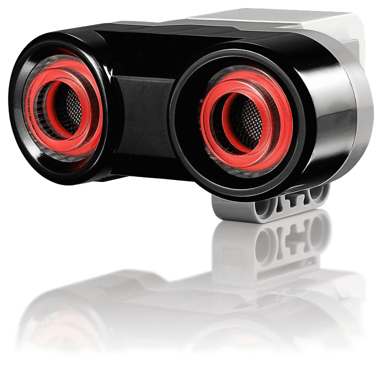
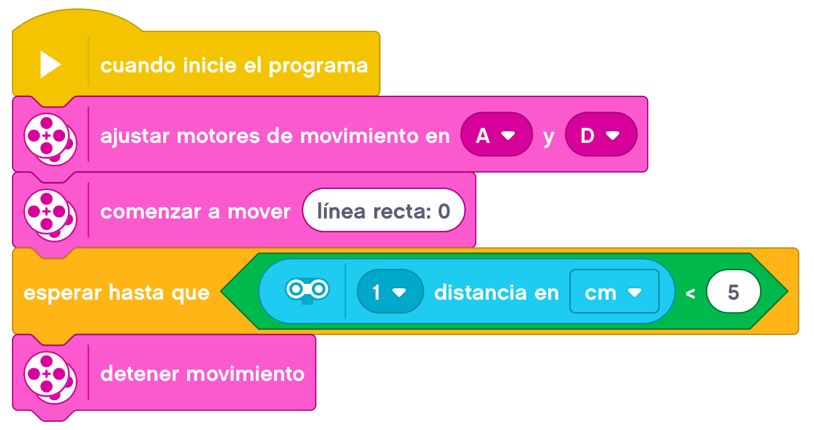

En esta actividad aprenderemos a utilizar el sensor ultrasónico para detectar objetos delante nuestro.

El Sensor ultrasónico es un sensor digital que puede medir la distancia a un objeto que se encuentra frente a él. Para hacerlo, envía ondas de sonido de alta frecuencia y mide cuánto tarda el sonido en reflejarse de vuelta al sensor. La frecuencia de sonido es demasiado alta para el oído humano.

La distancia a un objeto puede medirse en pulgadas o centímetros. Esto le permite programar su robot para que se detenga a una distancia determinada de una pared.
Al utilizar unidades en centímetros, la distancia detectable es entre 3 y 250 centímetros (con una exactitud
de +/- 1 centímetro). Al utilizar unidades en pulgadas, la distancia detectable es entre 1 y 99 pulgadas
(con una exactitud de +/- 0,394 pulgadas). Un valor de 255 centímetros o 100 pulgadas significa que el
sensor no puede detectar ningún objeto frente a él.
Una luz que permanece encendida alrededor de los ojos del sensor indica que el sensor está en Modo Medida.
Una luz que parpadea indica que está en Modo Presencia.
En Modo Presencia, el sensor puede detectar otro Sensor ultrasónico que esté funcionando cerca. Al estar en
Modo Presencia, el sensor detecta señales de sonido pero no las envía.
El Sensor ultrasónico puede ayudar a sus robots a esquivar muebles, seguir un objetivo móvil, detectar un
intruso en la sala o emitir un sonido «ping» con volumen o frecuencia en aumento a medida que un objeto se
acerca al sensor.
Empezaremos por montar nuestra Base Motriz a la que añadiremos el Sensor Ultrasónico.
Empezaremos por empezar la marcha y parar cuando detectemos un objeto (por ejemplo a 5 cm. del mismo). Se
debe parar definitivamente y no continuar aunque quitemos el objeto.
Un ejemplo de como podemos resolver el reto es el siguiente.

En el siguiente reto, haremos lo mismo que en el anterior, pero en este caso, si retiramos el objeto, el
robot lo perseguirá hasta quedarse de nuevo a la distancia indicada.
Un ejemplo de como podemos resolver el reto es el siguiente.
Ahora haremos todo lo contrario. Nuestro robot permanecerá quieto y cuando detecte que se acerca un objeto a
menos de 5 cm., empezará a caminar durante 3 segundos y parará definitivamente.
Un ejemplo de como podemos resolver el reto es el siguiente.
Haremos un pequeño circuito en este reto y pondremos un obstáculo en medio del circuito. Cuando lo detecte,
tendrá que esquivarlo, volviendo de nuevo a relizar el circuito
Un ejemplo de como podemos resolver el reto es el siguiente.